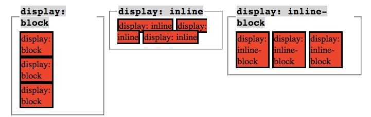

Intro to CSS
Opening
If HTML is a set of instructions telling the browser WHAT to display, CSS tells it HOW to display it.
CSS stands for:
- Cascading
- Style
- Sheet
It provides the browser with precise instructions on how to style each element we want displayed on the page.
It can affect the text format (font, size, color, etc.), the size and position of various objects on the page, etc.
I Do: CSS Syntax
We build our CSS with a selector (usually the name of the html tag, but it can also be a specific class of elements, or an element with a unique ID):
Draw on board
selector {
property_1: value_1;
property_2: value_2;
}
Do not forget the curly brackets, or the semi-colon after the value!
The last semi-colon can be omitted but to be honest, don't worry about that.
We Do: Let's do some CSS
Let's create a new html page:
$ mkdir intro_to_css && intro_to_css
$ touch intro_to_css.html
Then let's create a basic html structure:
<!DOCTYPE>
<html>
<head>
<title>Intro to CSS</title>
</head>
<body>
</body>
</html>
Inline CSS
We can style a tag inline like this:
<body style="background:red">
Open in browser.
However, this is BAD for lots of reasons. Don't do this!
We Do: Linking the stylesheet to the html file
Inside the <head> tags, we need to add a self-closing <link> tag, indicating the type of relations (rel="stylesheet") and the file path (href="style.css"):
<link rel="stylesheet" href="style.css">
We often have a specific folder for stylesheets, as we can have several on one application. For now, we placed the style.css file within the same folder as our html file, making it easy to target it (href="style.css")
We need to create a css file
touch style.css
We Do: Let's do some CSS
Add some html
First, we need to add some html to style:
<p>This is a paragraph element</p>
<div>This is a DIV</div>
<div>This is another DIV</div>
Now, let's add some CSS into our stylesheet file:
p {
color: orange;
}
This will change the color of ALL paragraph tags to have the font-color "orange".
Refresh the page.
div {
border: 1px solid black;
}
This will add a 1px black border to each DIV on the page, since the selector targets the "div" elements.
Refresh the page.
CSS Comments
To comment out something in CSS, we use /* ... */ syntax.
Example:
div {
/* border: 1px solid black; */
}
Shortcut CSS properties
Some CSS properties you can join together. For example:
div {
/* border: 1px solid black; */
border-width: 1px;
border-style: solid;
border-color: black;
}
Some more
You can also change the background color of elements ("background-color"), as well as the color of the text contained in these elements ("color"). Be careful not to confuse the two!
div {
/* border: 1px solid black; */
border-width: 1px;
border-style: solid;
border-color: black;
background-color: blue;
color: white;
width: 100px;
height: 50px;
}
We Do: "id" and "class" attributes in CSS
We can apply "class" and "id" attributes to elements in html. It allows us to target these specific elements in CSS.
IDs
Ids are used when you have one example of something on a page. Not one example of an HTML tag, but one specific element you want to make unique.
Let's have a look at an example of using IDs:
In our HTML file:
<div id="div_1">
...some content...
</div>
<div id="div_2">
...some content...
</div>
<div id="div_3">
...some content...
</div>
Now within our "style.css" file:
#div_1 {
background-color: green;
}
This allows us to target specific elements on the page (here, only the div with the ID "div_1"). We can give any name we want to our ID attribute (besides the obvious reserved words, such as tag names, etc.).
Classes
The class attribute allows us to target not one, but several elements that may share similarities.
Add:
<div id="div_1">
<div class="red_bg">
...some content...
</div>
<div class="red_bg">
...some content...
</div>
</div>
Now within our "style.css" file:
.red_bg {
background-color: red;
}
We can also do:
#div_1 .red_bg {
background-color: red;
}
If we want to be more specific.
We Do: Text-align
Let's add another p tag, and align the text to the right of the screen.
<p class="text-align">Align this right</p>
Let's add some css:
.text-align {
text-align: right;
}
By applying this class to elements in our HTML file, we can position the text they contain on the right.
We Do: Changing the font
We can change the font, using
.text-align {
text-align: right;
font-family: "Comic Sans MS";
}
By applying this class to elements in our HTML file, we can apply this particular font to targeted elements.
We have used a web-font, one that the browser already works with. However you can add custom fonts using Google Fonts or you can include your own font.
We Do: Hiding elements
We can hide elements using css by:
.text-align {
text-align: right;
font-family: "Comic Sans MS";
visibility: hidden;
}
This will hide the targeted element, but the space where it should be on the page still exists.
If we don't want this, we can do:
.text-align {
text-align: right;
font-family: "Comic Sans MS";
/*visibility: hidden;*/
display: none;
}
This will not only hide the targeted element, but also remove it completely from the flow of the page, getting rid of the place that was allocated for it.
We Do: Multiple classes
You can also chain classes together, applying several classes to one element:
Let's add:
<p class="first second">Multiple classes</p>
Then lets create two classes:
.first {
font-size: 40px;
}
.second {
color: red;
}
As we can imagine, the possibilities are endless. There are many properties and values to work with, and many ways to target specific elements. Two pages could have the same HTML content, and yet look dramatically different, due to different CSS stylesheets.
I Do: CSS Box Model
All HTML elements can be considered as boxes. In CSS, the term "box model" is used when talking about design and layout.
The CSS box model is essentially a box that wraps around HTML elements, and it consists of: margins, borders, padding, and the actual content.
The box model allows us to place a border around elements and space elements in relation to other elements.
With CSS properties and values, it is possible to apply specific styles to each of these elements, and change the way they behave and/or display on the page.
The image below illustrates the box model:

What do these different layers mean, and how are they relating to one another?
Margin - Clears an area around the border. The margin does not have a background color, it is completely transparent
Border - A border that goes around the padding and content. The border is affected by the background color of the box
Padding - Clears an area around the content. The padding is affected by the background color of the box
Content - The content of the box, where text and images appear
We Do: Display
We can display our elements in several different ways. One CSS property, "display", can take on several values that help us in this process: "block", "inline", and "inline-block".
An inline element has no line break before or after it, and it tolerates HTML elements next to it. (Think a line of text).
A block element has some whitespace above and below it and does not tolerate any HTML elements next to it.
An inline-block element is placed as an inline element (on the same line as adjacent content), but it behaves as a block element.
To illustrate this, let's look at a few exaples, with different display properties:
Add:
<div class="inline">Content</div>
<div class="inline">Content</div>
<div class="inline">Content</div>
<div class="block">Content</div>
<div class="block">Content</div>
<div class="block">Content</div>
<div class="inline-block">Content</div>
<div class="inline-block">Content</div>
<div class="inline-block">Content</div>
The css:
.inline {
display: inline;
}
.block {
display: block;
}
.inline-block {
display: inline-block;
}

We Do: Positioning
Another CSS property, "position", can take "relative" or "absolute" values, among others.
A page element with "relative positioning" gives you the control to "absolutely position" children elements inside of it. This might not be obvious to everyone - that's probably because this isn't intuitive. At all. Let's look at an example.

The relative positioning on the parent is what matters here. This what would happen if we forgot that:

In this small example, it doesn't seem to matter much. But it really is a significant change.
⇒ The "absolutely positioned" elements are positioning themselves in relation to the body element, instead of their direct parent. So if the browser window grows, that element in the bottom left is going to stick with the browser window, not hang back inside, like it was the case in the previous example.
Static Positioning
HTML elements are positioned static by default. A "static positioned" element is always positioned according to the normal flow of the page.
Static positioned elements are not affected by the top, bottom, left, and right properties.
Fixed Positioning
An element with fixed position is positioned relative to the browser window.
It will not move even if the window is scrolled.
Float
Float is one of the CSS properties that really confuses people.
The float property specifies whether or not a box (or an element) should float, whether elements should float around it.

Note that "absolutely positioned" elements ignore the float property as they are removed from the normal document flow.
Floated elements remain a part of the flow of the web page. This is distinctly different than page elements that use absolute positioning.
There are four valid values for the float property. "Left" and "right" float elements those directions respectively. "None" (the default) ensures the element will not float and "inherit" which will assume the float value from that elements parent element.
Clear
All elements will float next to floated items until they are specificall cleared. Think about the text on the page.

I Do: Specificity in CSS
One of the most important concepts with CSS is specificity. Every element gets a score and it's this score that dictates which CSS property is applied.
Closure
CSS is really fun to do. You have to remember a few rules but once you have them remembered, it's greate to see things change in front of your eyes.